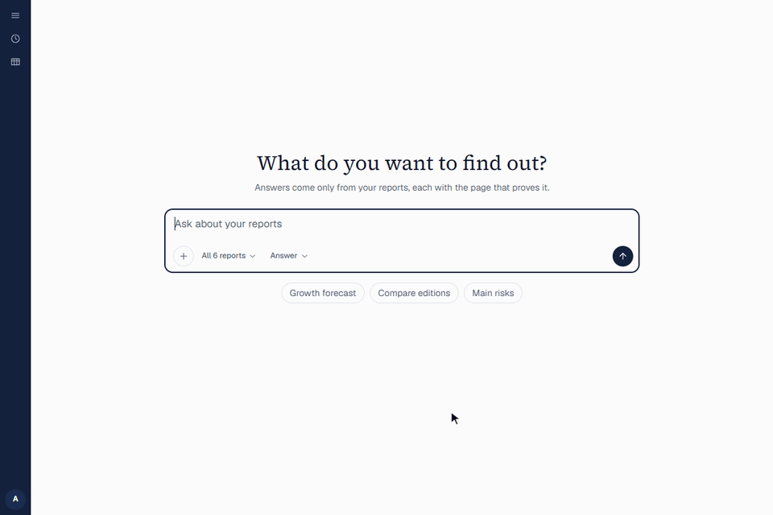

<!doctype html>
<html lang="en">

<head>
  <meta charset="utf-8">
  <meta name="viewport" content="width=device-width, initial-scale=1">
  <title>MARC Pilot Proposal</title>
  <link rel="stylesheet"
    href="https://fonts.googleapis.com/css2?family=Archivo:wdth,wght@62..125,100..900&family=Instrument+Sans:wght@400..700&family=IBM+Plex+Mono:wght@400;500&display=swap">
  <style>
    /* The business version of deck.html: same look (cream, teal, coral; flat outlined cards; one spacing scale), nine slides, no technical terms. */
    :root {
      --bg: #FFF9F0;
      --card: #FFFFFF;
      --fg: #1F1B16;
      --dim: #6A6257;
      --line: #E3D8C6;
      --teal: #0F3B3A;
      --teal2: #174A48;
      --teal3: #245C59;
      --coral: #FF7A5C;
      --coral-ink: #D9482B;
      --yellow: #FFE18A;
      --mint: #9EE6C0;
      --green: #1F7A4A;
      --warn: #8F6212;
      --s1: 8px;
      --s2: 12px;
      --s3: 16px;
      --s4: 24px;
      --s5: 32px;
      --r: 4px;
      --display: "Archivo", "Helvetica Neue", Arial, sans-serif;
      --sans: "Instrument Sans", "Helvetica Neue", Arial, system-ui, sans-serif;
      --mono: "IBM Plex Mono", ui-monospace, Menlo, monospace;
    }

    * {
      box-sizing: border-box;
      margin: 0;
      padding: 0;
    }

    html,
    body {
      height: 100%;
      background: #0B2928;
      color: var(--fg);
      overflow: hidden;
    }

    body {
      font-family: var(--sans);
      display: grid;
      place-items: center;
    }

    #stage {
      width: 1280px;
      height: 720px;
      position: relative;
      flex: none;
      transform-origin: center center;
      background: var(--bg);
      color: var(--fg);
    }

    #stage.dark {
      background: var(--teal);
      color: var(--bg);
    }

    #stage.accent {
      background: var(--coral);
      color: var(--fg);
    }

    #stage.panel {
      background: #FFF4E2;
    }

    .slide {
      position: absolute;
      inset: 48px 56px 52px 56px;
      display: grid;
      gap: var(--s4);
      align-content: start;
    }

    .slide.between {
      align-content: space-between;
    }

    h1 {
      font: 900 66px/1.02 var(--display);
      font-stretch: 112%;
      letter-spacing: -.01em;
      text-wrap: balance;
    }

    h2 {
      font: 800 40px/1.1 var(--display);
      font-stretch: 108%;
      letter-spacing: -.005em;
      padding-bottom: var(--s2);
      border-bottom: 2px solid var(--coral);
      text-wrap: balance;
    }

    h3 {
      font: 700 14px var(--sans);
      letter-spacing: .12em;
      text-transform: uppercase;
      color: var(--coral-ink);
      margin-bottom: var(--s1);
    }

    .kicker {
      font: 600 13px var(--mono);
      letter-spacing: .14em;
      text-transform: uppercase;
      color: var(--coral-ink);
    }

    #stage.dark .kicker {
      color: var(--yellow);
    }

    #stage.accent .kicker {
      color: var(--teal);
    }

    p,
    li {
      font-size: 18px;
      line-height: 1.4;
    }

    p.big {
      font-size: 24px;
      line-height: 1.35;
      text-wrap: pretty;
    }

    p.dim {
      color: var(--dim);
    }

    p.fine {
      font-size: 13px;
      color: var(--dim);
    }

    #stage.dark p.dim {
      color: var(--mint);
    }

    .cols {
      display: grid;
      gap: var(--s4);
      align-items: start;
    }

    .cols.c2 {
      grid-template-columns: 1fr 1fr;
    }

    .cols.c3 {
      grid-template-columns: 1fr 1fr 1fr;
      align-items: stretch;
    }

    .cols.c4 {
      grid-template-columns: repeat(4, 1fr);
      align-items: stretch;
    }

    .cols.side {
      grid-template-columns: 1fr 440px;
    }

    .stack {
      display: grid;
      gap: var(--s3);
      align-content: start;
    }

    .card {
      background: var(--card);
      border: 1px solid var(--line);
      border-radius: var(--r);
      padding: var(--s3) var(--s4);
    }

    .card p {
      font-size: 17px;
    }

    .card.soft {
      border-left: 4px solid var(--coral);
      background: #FFF3EE;
    }

    .card.ok {
      border-left: 4px solid var(--green);
      background: #F0F8F3;
    }

    .card.warn {
      border-left: 4px solid var(--warn);
      background: #FFF8E1;
    }

    .card.ink {
      background: var(--teal);
      border-color: var(--teal);
      color: var(--bg);
    }

    .card.ink .lbl {
      color: var(--yellow);
    }

    .card.ink2 {
      background: var(--teal2);
      border-color: var(--teal3);
      color: var(--bg);
    }

    .card.ink2 .lbl {
      color: var(--yellow);
    }

    .card.accent {
      background: var(--coral);
      border-color: var(--coral);
      color: var(--fg);
    }

    .card.accent .lbl {
      color: var(--fg);
    }

    .card .lbl {
      font: 700 14px var(--sans);
      color: var(--coral-ink);
      margin-bottom: 6px;
    }

    .card .t {
      font-size: 19px;
      font-weight: 700;
      line-height: 1.25;
      margin-bottom: 4px;
    }

    .card .num {
      font: 900 64px/1 var(--display);
      font-stretch: 112%;
      margin: 4px 0 var(--s1);
    }

    .idx {
      display: block;
      font: 500 12px var(--mono);
      letter-spacing: .1em;
      color: var(--coral-ink);
      margin-bottom: 6px;
    }

    .card.ink .idx {
      color: var(--mint);
    }

    .rows {
      display: grid;
      align-content: start;
      border-top: 1px solid var(--line);
    }

    .rows p {
      font-size: 17px;
      line-height: 1.35;
      padding: 10px 0;
      border-bottom: 1px solid var(--line);
    }

    .rows b {
      color: var(--coral-ink);
    }

    .flow {
      display: flex;
      align-items: stretch;
      gap: var(--s1);
    }

    .flow .card {
      flex: 1;
    }

    .flow .arr {
      align-self: center;
      width: 0;
      height: 0;
      border-top: 8px solid transparent;
      border-bottom: 8px solid transparent;
      border-left: 12px solid var(--coral);
      flex: none;
    }

    table {
      width: 100%;
      border-collapse: separate;
      border-spacing: 0;
      background: var(--card);
      border: 1px solid var(--line);
      border-radius: var(--r);
      overflow: hidden;
      font-size: 16px;
    }

    th,
    td {
      text-align: left;
      padding: 10px var(--s2);
      border-bottom: 1px solid var(--line);
      vertical-align: top;
      line-height: 1.35;
    }

    th {
      background: var(--teal);
      color: var(--bg);
      font-weight: 700;
      font-size: 14px;
      letter-spacing: .04em;
    }

    tr:nth-child(odd) td {
      background: #FFFBF3;
    }

    tr:last-child td {
      border-bottom: 0;
    }

    td:last-child {
      white-space: nowrap;
    }

    .names {
      font-size: 16px;
      color: var(--mint);
    }

    .ftr {
      position: absolute;
      left: 56px;
      right: 56px;
      bottom: 16px;
      display: flex;
      justify-content: space-between;
      font: 500 12px var(--mono);
      color: var(--dim);
      letter-spacing: .04em;
    }

    #stage.dark .ftr {
      color: var(--mint);
    }

    #stage.accent .ftr {
      color: var(--teal);
    }

    .prog {
      position: absolute;
      left: 0;
      bottom: 0;
      height: 4px;
      background: var(--coral);
      transition: width .2s;
    }

    #stage.accent .prog {
      background: var(--teal);
    }

    .note {
      position: absolute;
      left: 56px;
      right: 56px;
      bottom: 44px;
      display: none;
      background: var(--teal);
      color: var(--bg);
      padding: var(--s2) var(--s3);
      border-radius: var(--r);
      font-size: 15px;
      line-height: 1.4;
    }

    #stage.notes .note {
      display: block;
    }

    .shot {
      margin: 0;
      border: 1px solid var(--teal);
      border-radius: var(--r);
      overflow: hidden;
      background: #fff;
    }

    .shot img {
      display: block;
      width: 100%;
      height: 470px;
      object-fit: cover;
      object-position: left top;
    }

    .shot figcaption {
      font-size: 13px;
      color: var(--dim);
      padding: var(--s1) var(--s2);
      border-top: 1px solid var(--teal);
    }

    .kv {
      display: flex;
      gap: var(--s5);
    }

    .kv div {
      display: flex;
      flex-direction: column;
    }

    .kv b {
      font: 900 54px/1 var(--display);
      font-stretch: 112%;
    }

    .kv span {
      font: 500 12px var(--mono);
      color: var(--dim);
      margin-top: 6px;
      letter-spacing: .06em;
      text-transform: uppercase;
    }

    .cat {
      display: block;
    }

    .cat.hero {
      position: absolute;
      right: 10px;
      top: 90px;
      width: 300px;
    }

    .cat.hero.up {
      top: 20px;
      width: 220px;
    }

    .cat.md {
      width: 200px;
    }
  </style>
</head>

<body>
  <div id="stage">
    <div id="view"></div>
    <div class="note" id="note"></div>
    <div class="ftr"><span id="hint"></span><span id="pg"></span></div>
    <div class="prog" id="prog"></div>
  </div>

  <script>
    (function () {
      var state = { i: 0, notes: false };

      function title(t) { return '<h2>' + t + '</h2>'; }
      // The mascot from deck.html, three poses only.
      function cat(pose, cls) {
        var K = "#1B1B1B", F = "#F4B45F", st = 'stroke="' + K + '" stroke-width="5" stroke-linejoin="round" stroke-linecap="round"';
        var roller = '<g transform="rotate(-38 196 124)"><rect x="176" y="100" width="44" height="24" rx="7" fill="#FF7A5C" ' + st + '/></g><path d="M196 122 L152 174" fill="none" ' + st + '/>';
        var nose = '<ellipse cx="110" cy="112" rx="4.5" ry="3.5" fill="' + K + '"/>';
        var smile = '<path d="M100 120 Q110 130 120 120" fill="none" ' + st + '/>';
        var happyEyes = '<path d="M82 102 Q91 90 100 102 M120 102 Q129 90 138 102" fill="none" ' + st + '/>';
        var face = happyEyes + nose + smile, prop = roller, extra = "";
        if (pose === "worried") {
          face = '<circle cx="92" cy="102" r="10" fill="#fff" ' + st + '/><path d="M82 100 H102" ' + st + '/><circle cx="128" cy="103" r="4.5" fill="' + K + '"/>' + nose + '<path d="M101 126 Q110 118 119 126" fill="none" ' + st + '/>';
          prop = ""; extra = '<path d="M162 62 Q170 76 162 82 Q154 76 162 62 Z" fill="#7CC4F5" stroke="' + K + '" stroke-width="3"/>';
        }
        return '<svg class="cat ' + (cls || '') + '" viewBox="0 0 220 210" aria-hidden="true"><path d="M8 94 H44 M10 110 H44 M176 94 H212 M176 110 H210" fill="none" stroke="' + K + '" stroke-width="3" stroke-linecap="round"/>' +
          '<polygon points="52,88 60,28 106,60" fill="' + F + '" ' + st + '/><polygon points="168,88 160,28 114,60" fill="' + F + '" ' + st + '/>' +
          '<rect x="86" y="150" width="48" height="54" fill="' + F + '" ' + st + '/><ellipse cx="110" cy="106" rx="64" ry="54" fill="' + F + '" ' + st + '/>' +
          '<path d="M84 154 Q110 172 136 154" fill="none" stroke="#EAF3F0" stroke-width="9" stroke-linecap="round"/>' + face + prop + extra + '</svg>';
      }
      function card(cls, inner) { return '<div class="card ' + (cls || '') + '">' + inner + '</div>'; }
      function rows(items) { return '<div class="rows">' + items.map(function (x) { return '<p>' + x + '</p>'; }).join('') + '</div>'; }
      function table(head, rows) {
        return '<table><tr>' + head.map(function (h) { return '<th>' + h + '</th>'; }).join('') + '</tr>' +
          rows.map(function (r) { return '<tr>' + r.map(function (c) { return '<td>' + c + '</td>'; }).join('') + '</tr>'; }).join('') + '</table>';
      }
      function step(t, s, cls) { return card(cls, '<div class="t">' + t + '</div><p class="dim">' + s + '</p>'); }
      function arr() { return '<div class="arr"></div>'; }
      function kv(items) { return '<div class="kv">' + items.map(function (x) { return '<div><b>' + x[0] + '</b><span>' + x[1] + '</span></div>'; }).join('') + '</div>'; }

      var NAMES = 'Irfan Ali (team lead) · Adam · Fahim · Shananth';
      var S = [
        {
          theme: "dark", cls: "between", html:
            '<div class="stack" style="max-width:820px"><p class="kicker">MARC · 10-week pilot proposal</p>' +
            '<h1>Find any figure across your reports in minutes, with the page that proves it.</h1>' +
            '<p class="big dim">An assistant for the research your customers already pay for.</p></div>' + cat("happy", "hero") +
            '<p class="names">' + NAMES + ' · October 2026</p>',
          note: "One sentence on who we are, then straight to the next slide. Do not explain the product here."
        },

        {
          theme: "panel", html:
            title("Today, one question across several reports is slow manual work, and nobody can check the answer") +
            '<div class="flow">' + step("Open a report", "Guess which one has it") + arr() + step("Search inside it", "Scroll and read around") + arr() +
            step("Copy the figure", "By hand, with its page") + arr() + step("Repeat", "For every report in scope") + arr() +
            step("Combine it", "Nobody re-checks the figures", "soft") + '</div>' +
            '<div class="cols side"><div><h3>What this costs you</h3>' + rows([
              "<b>Slow.</b> Every question that spans reports means searching several PDFs by hand.",
              "<b>Repeated.</b> The next person asks the same question and starts again from zero.",
              "<b>Unreliable.</b> A figure copied by hand has no link back to its page, so mistakes spread.",
              "<b>Untapped.</b> Customers cannot ask questions of the research they pay for, so its value is capped.",
              "<b>Risky.</b> A full system is a large investment before anyone knows customers want it."]) + '</div>' +
            '<div class="stack" style="justify-items:center">' + cat("worried", "md") +
            '<p class="fine" style="text-align:center">Our reading of the brief and of MARC Online. How often this happens, and how long one question takes, is yours to tell us.</p></div></div>',
          note: "This is the whole problem; say it once and say it fully. Then ask: is this how it really happens, who does it, how often, and how long does one question take? Their answer becomes the pilot's starting point."
        },

        {
          theme: "accent", cls: "between", html:
            '<p class="kicker">Our answer in one line</p>' +
            '<h1 style="font-size:64px">An assistant that answers only from your reports, and shows the page for every figure.</h1>' +
            '<p class="big" style="max-width:900px">If it cannot back an answer up, it says so instead of guessing. That is the difference from a general AI chat tool.</p>',
          note: "Pause here. The point is not AI over PDFs. It is that every answer is checked against the page before anyone sees it, and the check is automatic and auditable."
        },

        {
          html:
            title("What your customer sees") +
            '<div class="cols side"><figure class="shot"><figcaption>The working demo today, on five public World Bank reports and one sample internal memo.</figcaption></figure>' +
            '<div class="flow" style="flex-direction:column">' +
            step("Ask in plain English", "“What did the April 2024 report forecast for growth?”") +
            step("Get an answer with a page for every figure", "Only from reports this customer has bought.") +
            step("Click to see the proof", "The exact sentence, highlighted on the real page.") +
            step("Or an honest “not found”", "When the library does not say, it does not guess.", "soft") + '</div></div>',
          note: "Live demo here if possible: one question it answers, one it should refuse. The demo has a user picker instead of a login; the pilot uses your own login."
        },

        {
          html:
            title("Why you can trust the answers") +
            '<div class="cols c3">' +
            card("", '<p class="lbl">Checked before it is shown</p><p>Every figure must appear, word for word, on the page it cites. If it does not, the AI gets one more try, then the figure is removed.</p>') +
            card("", '<p class="lbl">Customers only see what they bought</p><p>A report a customer has not paid for is never searched, never shown, never cited.</p>') +
            card("", '<p class="lbl">“Not found” beats a guess</p><p>If nothing can be backed up, it says so and shows the closest pages instead.</p>') + '</div>' +
            '<div class="cols c2">' +
            card("ink", '<p class="lbl">Tested so far</p><p class="num">0 wrong figures</p><p>stated as fact in 285 test answers, across three different AI models.</p>') +
            '<div class="stack">' + card("warn", '<p class="lbl">Where it still falls short</p><p>Questions that compare two reports sometimes get half an answer. These are flagged and measured, and fixing them is a pilot priority.</p>') +
            card("soft", '<p class="lbl">Why not Copilot or NotebookLM?</p><p>For staff chatting with PDFs, they are cheaper, and we would say so. They do not check figures against the page, keep each customer to their own reports, or measure how often they are wrong.</p>') + '</div></div>',
          note: "Lead with the zero, then say the limit before they find it. The check cannot judge whether a true figure answers the question, which is why we measure that separately. Charts are not read; scanned and table-heavy reports are untested, so ask for the ugliest ones. Measured on Qwen 3.8 27B, Gemini 4 Argon and Claude Sonnet 5.5."
        },

        {
          theme: "panel", html:
            title("What it costs to run the pilot") +
            kv([["1.6–2.4 sen", "per question"], ["< RM 700", "a month, at 2,000 questions"], ["0", "changes to MARC Online"]]) +
            '<div class="cols c2">' +
            card("", '<p class="lbl">Running cost is small</p><p>On Qwen, the Chinese model we already tested, the AI and hosting together come to less than RM 700 a month at pilot volume. It runs separately from MARC Online and never changes it.</p>') +
            card("warn", '<p class="lbl">The real cost is people</p><p>Our team of five for ten weeks, and about half a day a week from your research staff to write and grade 60 to 100 test questions. That staff time is the one thing we cannot provide.</p>') + '</div>' +
            '<p class="fine">Indicative, based on public list prices in October 2026 (Qwen 3.8 27B on Alibaba Cloud International, Google Cloud), at RM 4.08 to the US dollar. On Claude Sonnet 5.5 it would be 6–12 sen a question, under RM 1,050 a month. We confirm prices against the provider and region you choose, and measure them during the pilot.</p>',
          note: "Say the per-question figure, then stop. At pilot scale the AI cost is a rounding error: on Qwen it is about RM 40 a month at 2,000 questions, so nearly all of the monthly figure is the platform. Do not quote a people cost here; that is a commercial conversation. If they ask where their data goes, several providers offer the same Qwen model, so ask which region they need. Detail: about 5,000 words in and 400 out per question; the platform is RM 250 to 650 a month."
        },

        {
          html:
            title("A 10-week pilot that ends in a clear decision") +
            '<div class="flow">' +
            card("", '<div class="t">Set up on your reports</div><p class="lbl">Weeks 1 to 3</p><p class="dim">Your sample reports loaded and a first accuracy score. Pilot users, AI provider and success targets agreed.</p>') + arr() +
            card("", '<div class="t">Build it properly</div><p class="lbl">Weeks 4 to 7</p><p class="dim">Answers that compare reports, your login, admin screens, and a scorecard that runs on every change.</p>') + arr() +
            card("", '<div class="t">Real users try it</div><p class="lbl">Weeks 8 to 9</p><p class="dim">Your pilot users ask real questions. We track time saved, ratings and cost per question.</p>') + arr() +
            card("ink", '<div class="t">Decide</div><p class="lbl">Week 10</p><p>Results against the targets you set in week 1.</p>') + '</div>' +
            '<div class="cols c2">' +
            card("ok", '<p class="lbl">Targets met</p><p>The same measurements size the full system, from real usage and real cost.</p>') +
            card("soft", '<p class="lbl">Targets not met</p><p>The results show exactly where it fell short, and you stop having spent little.</p>') + '</div>' +
            '<p class="dim">You see working results at weeks 1, 3, 5, 7 and 10, not status reports. If time runs short we cut features, never the accuracy check or access control.</p>',
          note: "Week 1 depends on their decisions; if those slip, everything slips. Weeks 8 to 9 depend on pilot users actually using it, so ask them to name those users now. Offer a 30-minute review at each checkpoint."
        },

        {
          html:
            title("The team, and who you talk to about what") +
            table(["Who", "Responsible for", "Busiest in"], [
              ["<b>Irfan Ali</b> · team lead", "<b>Accuracy and results.</b> Your single point of contact. Owns the accuracy check, the test questions with your staff, and the week-10 review.", "Weeks 1, 7, 10"],
              ["<b>Adam</b>", "<b>Getting your reports in.</b> Loading your PDFs, including scanned pages and tables, and flagging pages that need a person to look.", "Weeks 1 to 3"],
              ["<b>Fahim</b>", "<b>Finding the right pages.</b> Search across your library, including questions that compare reports.", "Weeks 2 to 5"],
              ["<b>Shananth</b>", "<b>Access and security.</b> Login, which customer sees which reports, admin screens, and hosting.", "Weeks 2, 6, 8"],
              ["<b>Adam</b>", "<b>Evaluating the AI.</b> Score its answers on your test questions as it changes.", "Weeks 7 to 10"],
              ["<b>Irfan</b>", "<b>What users see.</b> The app itself: asking questions, viewing the cited page, giving feedback.", "Weeks 4 to 9"]]) +
            '<div class="cols c2">' +
            card("", '<p>Everyone can run the demo and explain how an answer is made. Each area has an owner and a named back-up.</p>') +
            card("", '<p>In the pilot weeks, everyone supports users and fixes what they find, so no single area holds up the decision.</p>') + '</div>',
          note: "Each person introduces their own row in one sentence. Each should be ready to answer one question outside their own area."
        },

        {
          theme: "dark", cls: "between", html:
            '<div class="stack" style="max-width:820px"><p class="kicker">To start next week</p><h1 style="font-size:56px">Four things we need from you</h1></div>' + cat("happy", "hero up") +
            '<div class="cols c4">' +
            card("ink2", '<p class="lbl">Five sample reports</p><p>Including your hardest one: scanned, or heavy on tables.</p>') +
            card("ink2", '<p class="lbl">A research contact</p><p>To help write and grade the test questions.</p>') +
            card("ink2", '<p class="lbl">A sponsor</p><p>Who agrees the week-10 targets and signs off the decision.</p>') +
            card("ink2", '<p class="lbl">A yes on data</p><p>Which AI provider may read your research, and in which country it is stored.</p>') + '</div>' +
            card("accent", '<p class="lbl">At week 10</p><p class="big">A go or no-go decision, on your numbers, not ours.</p>') +
            '<p class="names">' + NAMES + '</p>',
          note: "End on the four boxes and stop talking. Before the meeting ends, ask for the sponsor's name and a date for the five sample reports."
        }
      ];

      var view = document.getElementById("view"), stage = document.getElementById("stage");
      function pad(n) { return n < 10 ? "0" + n : "" + n; }

      function render() {
        var s = S[state.i];
        stage.className = (s.theme || "") + (state.notes ? " notes" : "");
        view.innerHTML = '<div class="slide ' + (s.cls || "") + '">' + s.html + '</div>';
        view.querySelectorAll(".flow").forEach(function (f) { f.querySelectorAll(".card").forEach(function (c, k) { var x = document.createElement("span"); x.className = "idx"; x.textContent = pad(k + 1); c.insertBefore(x, c.firstChild); }); });
        document.getElementById("note").textContent = s.note || "";
        document.getElementById("pg").textContent = pad(state.i + 1) + " / " + S.length;
        document.getElementById("hint").textContent = state.i === 0 ? "← → slides | N notes | F fullscreen | Home / End" : "";
        document.getElementById("prog").style.width = ((state.i + 1) / S.length * 100) + "%";
        try { location.hash = String(state.i + 1); } catch (e) { }
      }
      function go(d) { var n = Math.max(0, Math.min(S.length - 1, state.i + d)); if (n !== state.i) { state.i = n; render(); } }

      document.addEventListener("keydown", function (e) {
        var k = e.key;
        if (k === "ArrowRight" || k === "PageDown" || k === " " || k === "Enter") go(1);
        else if (k === "ArrowLeft" || k === "PageUp" || k === "Backspace") go(-1);
        else if (k === "Home") { state.i = 0; render(); }
        else if (k === "End") { state.i = S.length - 1; render(); }
        else if (k === "n" || k === "N") { state.notes = !state.notes; render(); }
        else if (k === "f" || k === "F") { if (!document.fullscreenElement) { document.documentElement.requestFullscreen && document.documentElement.requestFullscreen(); } else { document.exitFullscreen(); } }
      });
      stage.addEventListener("click", function (e) { go(e.clientX < window.innerWidth / 3 ? -1 : 1); });

      function fit() { stage.style.transform = "scale(" + Math.min(window.innerWidth / 1280, window.innerHeight / 720) + ")"; }
      window.addEventListener("resize", fit);
      fit();

      var h = parseInt((location.hash || "").replace("#", ""), 10);
      if (h >= 1 && h <= S.length) state.i = h - 1;
      render();
    })();
  </script>
</body>

</html>